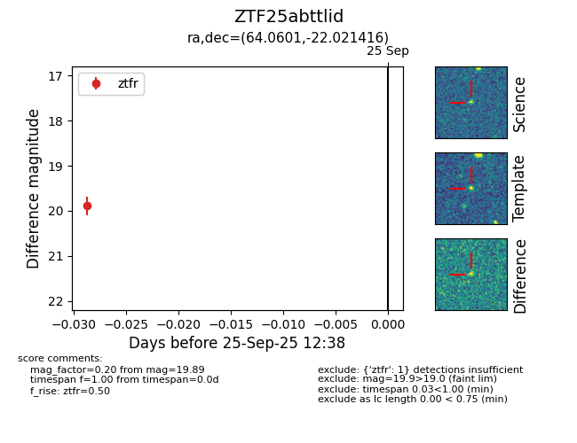

FINK: ZTF25abttlid
Lasair: ZTF25abttlid
ALeRCE: ZTF25abttlid
ZTF25abttlid (ztf,fink)
equatorial (ra, dec) = (64.0601,-22.02142)
galactic (l, b) = (218.3741,-43.46805)

last ztfr=19.89
1 ztfr detections